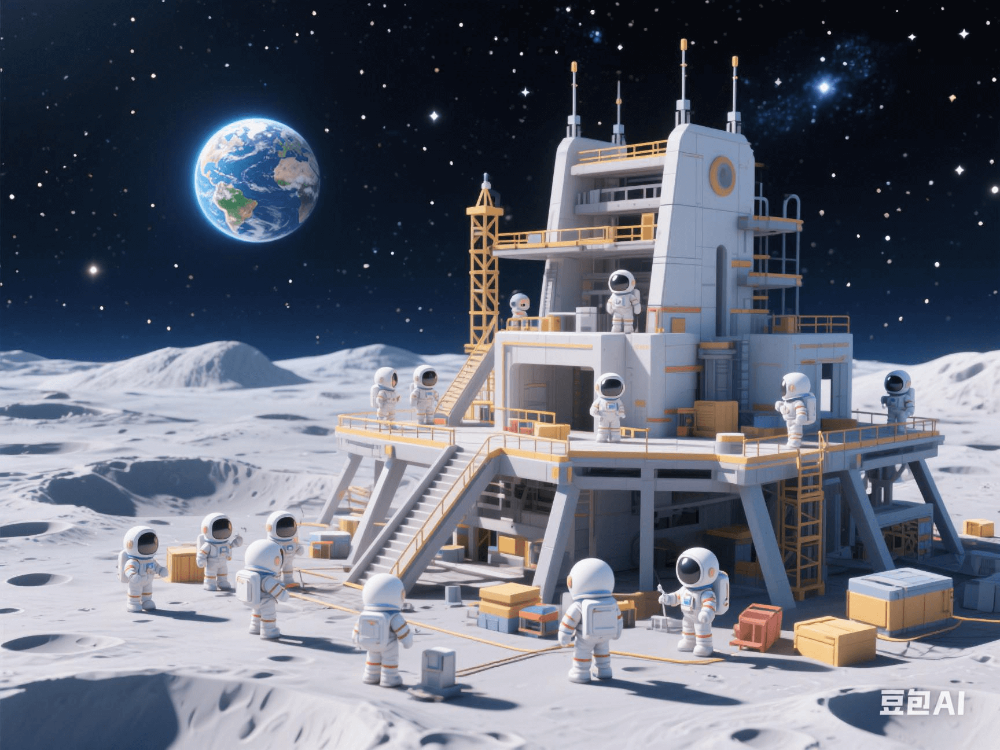

NASA's Latest Plan: How to Build a Space Gas Station on the Far Side of the Moon?
PeaceLove.Top Insights :2025-04-19
🚀 NASA's Latest Plan: How to Build a Space Gas Station on the Far Side of the Moon? 🌑
🌕 The 'Space Gas Station' on the Far Side of the Moon: Turning Science Fiction into Reality. As humanity's exploration of deep space accelerates, NASA's latest plan is breaking the boundaries of science fiction by building a real 'space gas station' on the far side of the moon. This plan is not only exciting but also full of engineering challenges. From resource collection, energy supply to building structure, this grand plan will pave the way for humanity's future space exploration. So, how exactly will the'space gas station' on the far side of the moon be built? Let's find out. 🔧✨
🛠️ Challenges and Opportunities in Building the 'Space Gas Station'
1. Why Choose the Far Side of the Moon? 🌑
The far side of the moon has long been free from the coverage of electromagnetic signals from Earth, providing an ideal hidden base for future deep-space exploration. Being free from Earth's radio interference, it can become a'mute' area, suitable for deep-space communication and advanced scientific experiments. In addition, the less solar-radiation influence on the far side of the moon makes the energy supply for building a gas station here more stable, making it an important hub for exploring other planets. 🌞🚫
2. Resource Collection: Obtaining Fuel from the Lunar Surface 🪐
The key to the'space gas station' lies in how to obtain sufficient resource supplies. NASA plans to use the abundant ice-water resources on the lunar surface, especially the water ice in the polar regions, as raw materials for fuel production. Through the electrolysis-water decomposition technology, water is converted into hydrogen and oxygen, which are the core components of rocket fuel. In this way, the future lunar base can not only be self-sufficient but also support deep-space missions. 💧⚡
3. Energy Supply: How to Cope with the Extreme Lunar Environment? 🌙
The extreme lunar environment also poses considerable challenges to building a space gas station. The lunar day-night temperature difference is extremely large, reaching 127°C during the day and dropping to-173°C at night. To ensure the normal operation of the base, NASA plans to deploy solar-power generation equipment combined with advanced energy-storage technology to provide a continuous energy supply for the 'gas station'. Solar panels will be installed in the area on the far side of the moon, which can fully utilize the continuous sunlight, thus overcoming the impact of low-temperature at night on energy supply. ☀️🔋
🔭 Engineering Details of Building on the Far Side of the Moon: How to Break Conventions and Meet Challenges?
1. Automated Construction: Unmanned Equipment Laying the Foundation 🤖
Considering the harsh lunar environment, NASA will rely on automation and unmanned-vehicle technology to complete infrastructure construction. These devices will be responsible for lunar-surface exploration, resource collection, construction, and maintenance by robots and drones. The future lunar gas station is not only a 'gas station' for humans but also a test field for technological innovation, and automated construction will be at the core of all this. 🤖🚜
2. Modular Design: Building a 'Space City' 🏙️
To efficiently utilize the limited lunar resources, NASA plans to adopt a modular design concept, similar to a space station built with 'building blocks'. Each module can be independently built and assembled, ultimately forming a complete gas-station system. This design not only improves engineering efficiency but also makes the lunar base highly flexible, capable of being expanded or adjusted at any time according to needs. 🔩🏗️
3. Living and Working Environment: Providing Living Support for Astronauts 🛏️
Building a gas station on the far side of the moon is not just for fuel production. NASA will also provide living and working spaces for long-staying astronauts. The lunar base will be equipped with advanced life-support systems, communication equipment, and laboratory facilities to support astronauts in conducting scientific research, geological exploration, and rocket-refueling work. Through advanced air-filtration systems, temperature-control devices, and food reserves, astronauts can survive and work on the moon for months or even longer. 🌌👩🚀
🧑🚀 The Future of the Space Gas Station: Paving the Way for Mars Missions
This plan is not just about building a 'gas station' on the moon; it is also about preparing for future Mars expeditions. By using the moon as a springboard, NASA can more efficiently provide resource support for human exploration of other planets. If the lunar base can successfully achieve self-sufficiency and support deep-space exploration missions, then humanity can move towards Mars faster and more safely, starting a new interstellar journey. 🌠🚀
🌌 Conclusion: The Space Gas Station Is a Crucial Step in Human Space Exploration
The plan to build a'space gas station' on the far side of the moon marks an important step for humanity towards deep-space exploration. This plan is not only full of science-fiction color but also a practical project based on advanced technology. Although facing many technical challenges, through automation, resource utilization, and energy innovation, the far side of the moon will become an 'energy hub' for humanity in deep space, paving the way for future interstellar travel. 🛸 Humanity's dream of exploring the universe is gradually becoming a reality, and the'space gas station' on the far side of the moon is undoubtedly an important part of this grand blueprint. With the continuous advancement of technology, our space exploration will also enter a new era. 🌍✨
🌟 From science fiction to reality, humanity's space dream is gradually shining into the universe! 🌠